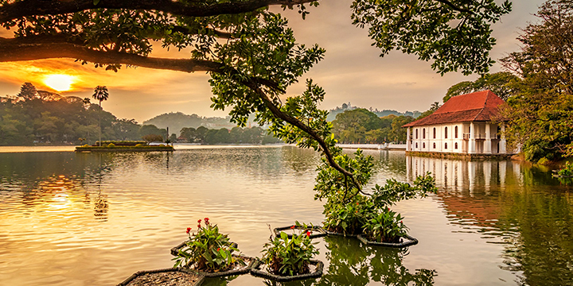

Despite being a relatively small island, sri Lanka is endowed with a diverse collection of landscapes, climates and natural features. Sri Lanka’s infamous beaches have been enticing visitors for many years. However, the rest of the island harbours many more idyllic vistas.
The central highlands are carpeted with emerald tea plantations interspersed with occasional waterfalls. Cool climates, misty views, and quaint estate bungalows are a throwback to bygone eras.
The cultural triangle in the centre of the island holds a certain magic, with ruins from several ancient kingdoms, majestic tanks, hidden rock caves, and ancient sacred temples, revealing the fascinating and almost unbelievable ancient architecture, art, and engineering.
The North of Sri Lanka is a vibrant concoction of essences, with a unique flavour and culture. Despite still bearing the scars from the civil war, the north truly bears testament to the diversity and variation that comprises the island. Influences include Portuguese, Dutch, Tamil, Muslim, and British characters. Chains of islands are scattered off the shoreline, with their own unique habitats, waiting to be explored.
The east of the island is home to lush paddy fields, spectacular sunrises, and a quieter more rural pace of life. Colourful places of worship, national parks, ports and harbours, and pristine clear waters offer a mellow experience to any weary traveller.
Tourist Destinations.
Colombo
Kandy
Galle
Nuwara Eliya
Negombo
Anuradhapura
Hambantota
Trincomalee
Dambulla
Polonnaruwa
With a population composed with many a races and religions, Sri Lanka is never short of festivals and celebrations. Every month brings a celebration either religious or cultural importance, making Sri Lanka one of the countries with highest number of celebrations and holidays.
The Sinhala-Tamil New year festival in April is the most important cultural festival in the country. The festival marks the beginning of the New Year and the end of harvesting season. A lengthy holiday and a table full of oily traditional delicacies like kokis, makes the New Year festival one of the long awaited festivals in the country.
The May full moon poya day or Vesak is the most important religious celebration in Sri Lanka, where Buddhists celebrate the nativity, enlightenment and passing away of Lord Buddha with many celebrations. Sri Lankans of every religion crowd the roads to enjoy Vesak decorations including pandals and lanterns and many a makeshift alm houses that line the roads offering every food item from beverages, dessert to main meals.
In August are the Esala festivals in Kandy and Kataragama. The Kataragama Esala Festival is a multi-religious festival where devotes use fire walking and extreme self-penance to shows their piety to Lord Kataragama. The Kandy Esala Perahera or the Dalanda Perahera is the largest cultural parade in the world and showcases the best of Sri Lankan dancing and music and the best of the domesticated tuskers in the country.
Plan Your Visit
Suggested Itineraries
Online Services
Travel Agents
Accommodation
Transport
Tour Guides
Events
Visitor's Say
Attractions
Contact Us
Bliss
Sri Lanka had continued to inspire and heal many who travelled to its shores ever since its existence was known to the world. Many who set foot on the island had considered it a part of a divine existence, Sri Lanka still continues to wrap its charm around its visitors, capturing their imagination with sights, sounds and flavors. Sri Lankan cuisines are a hidden treat to many while Ayurveda and meditation continues to heal the bodies and minds worn out with the cares of life.
The country’s native healing system, Ayurveda has been perfected over more than five thousand years. Based on herbs and diet, it was region’s only treatment method until the introduction of Western Medication in the 19th Century.
Meditation plays a large role in maintaining a perfect mental health. Buddhist meditation mainly deals with right mindfulness, right concentration and right view, three of the Noble eightfold path.
Although it would not heal your body or mind and uplift your senses to a godly realm, shopping therapy is bound to provide you with a temporary bliss and Sri Lanka provide excellent opportunity to immerse in shopping choosing between brilliant jewels and jewelry, finely carved wood, pottery and metal ware, porcelain, batik, spices and tea.
The craftsman ship of the country’s jewelers, weavers, woodworkers and ivory carvers had amazed the world for the last three thousand years ever since their creations were exported to many a corner of the civilized word.
Essence
Despite its fame as a resplendent island and a leading tourist destination, the secret of Sri Lanka’s attraction lies with its people. The spice addicted, cricket crazy and tea drinking people of Sri Lanka are famed for big smiles and a bigger heart. With a culture enriched with three thousand years of knowledge, Buddhism and many a colonial traditions, the Sri Lankan society is a potpourri of religions and races different yet similar in many a ways.
The Sri Lankans all love their food spicy and their tea light; an unavoidable for a country, which produces the world’s best spices and tea. Introduced to the country in the 19th century by colonial British Ceylon tea is the best tea in the world while Sri Lanka has also been known for its high quality spices since time immemorial.
In Sri Lanka, cricket is the ultimate passion which draws all the Sri Lankans together irrespective of caste, race and creed.
Other than tea and cricket, gems especially blue sapphires is synonymous with Sri Lanka. Country’s gem industry has a long, colourful history. Known also as ‘Rathnadeepa’ or the land of gems Sri Lanka had been producing brilliant blue Sapphire and red rubies among many other. Along with gems, Sri Lanka had been exporting fine crafted ivory to many royal courts of Europe. Many dainty treasures carved by local artists in ivory are found in the museum in Europe standing witness to the local skills, which is still found after being handed over father to son.
Heritage
With a history expanding over 3000years, Sri Lanka holds some of world’s ancient cities including Anuradhapura, Polonnaruwa and Digamadulla; their once glorious townships, palaces, temples, monasteries, hospitals and theaters intricately carved and modeled out of stone lay and abandoned and forgotten with time amidst the soaring jungles.
Of all the ancient cities of Lanka, the most famed and most exquisite is the Kingdom of Anuradhapura. Sri Lanka’s third and the longest serving capital and one of the oldest continuously inhabited cities in the world is also one of the most sacred cities of World Buddhists. It was the capital of Sri Lanka from the Fourth Century BC up to the turn of the eleventh Century and was one of the most stable and durable centers of political power and urban life in South Asia.
Sigiriya, a fifth century AD fortress and a water garden displays some of the most futuristic elements of landscaping and some of the oldest murals recorded in the country.
Polonnaruwa, the second most ancient kingdom of the country boasts of Irrigation systems that are far superior to those of the and they still provide irrigation water to the farmers in and around Polonnaruwa.Digamadulla, the Eastern kingdom of Sri Lanka was the agricultural and spiritual capital of the country during the Anuradhapura kingdom.
Sri Lanka’s last kingdom the Kingdome of Kandy is a testament to the Sri Lankan’s ability to pick up and rise from ashes. After being burned and ravaged more than thrice by the invading Portuguese the Kandyan Kingdom still holds beautifully carved and built houses, palaces and temple preserved for nearly 500 years.
With nearly 1600 km of of palm fringed Coastline baked to perfection surrounding the country Sri Lanka is the ideal destination for beach bums worldwide. May it be windsurfing, kayaking, yachting, water skiing, scuba diving or jut lazing around for the perfect tan, Sri Lanka offers it all.
The two monsoon winds providing rain to the two corners of the country at various periods, makes Sri Lanka’s beach holiday a year round prospect. The north east winds make the south western coast sunny and the sea calm from November to March. The South West winds make the East Coast waters quiet with the constant sun shine happily in agreement.
The best of the Southern beaches include Tangalla, Beruwala, Mirissa, Bentota and Unawatuna with varying options including chic boutique hotels, glowing coral reefs, gentle sandbars and undiscovered corners of paradise.
On the Western corner of the country to the north of Colombo is the Negambo lagoon. Its beaches, an old favourite with local and foreign visitors and lagoon famed for lobster harvesting. Despite having a ring of sandy beaches surrounding the country, Galle Face Green, a half a kilometre stretch between Galle Road and Indian Ocean is the playground of the Colombians.
Also Nilaveli is a coastal resort town located about 20 km North-West of Trincomalee, Trincomalee District, Sri Lanka. It used to be a popular tourist destination. Arugam Bay is a bay situated on the Indian Ocean in the dry zone of Sri Lanka's southeast coast. The bay is located 320 km due east of Colombo. It is a popular surfing and tourist destination. Pasikudah or Pasikuda is a coastal resort town located about 35 kilometers northwest of Batticaloa, Batticaloa District, Sri Lanka. It used to be a popular tourist destination, Pasikudah and Kalkudah are located few km apart.
Sri Lanka, the natures treasure chest is the home to one of the oldest civilizations in the world. Sri Lanka’s written history exceeds 2550 years. Its pre-history consist of planned cities, magnificent palaces, and expansive man made reservoirs, stunning temples and monasteries, green gardens, hard to believe monuments and works of art are characteristic of the rich and jubilant lives the celebrated monarchy of Sri Lanka lived. Sri Lanka is one of the most delightful destinations in the world to visit.

Kandy
Kandy is one of the most scenic cities in Sri Lanka and lies in the midst of hills. It is the Capital of the Central Province. It is both an administrative and religious city. Kandy is the second largest city in the country and is frequently visited by Buddhists especially of the Theravada School.Kandy is very famous among tourist for three main reasons: It is home to the sacred tooth relic of the Buddha (Temple of the Sacred Tooth Relic; Dalada Maligawa ), The Botanical Gardens ( Located in Peradeniya) and it always has a special place when it comes to festivities such as the Esala Perahara.
This famous upcountry town is situated 1868 meters (6128 feet) above sea level and is in the Nuwara Eliya District. Due to its high altitude, it has a Sub Tropical Highland climate. The average annual temperature varies between 11-20 C° and the recorded lowest temperature is 0.4 C° and the recorded highest temperature is 27.7 C°. Monthly rainfall varies between 70-225 mm and has an average annual rainfall figure or precipitation of 1900 mm. The maximum rainfall is generally in October and the minimum rainfall is in March. During the year it has a relative humidity between 65%-87%. Sri Lanka's highest mountain Pidurutalagala with a height of 2,527 m (8,292 ft) is very close to this town and can be seen prominently.The distance to the mountain is about 5 Km as the crow flies. During the British period this mountain was called as Mount Pedro. Today the mountain area is a high security zone since the summit is made used for state communication and TV transmission towers. Horton Plains situated south of Nuwara Eliya is a unique Ecological zone of Wet Patana Grassland with a Cloud Forest. The extend of Nuwara Eliya district is 1741 sq. Km. It consists of Nuwara Eliya, Maskeliya, Kothmale, Wapane and Hanguranketha electorates.
Sri Lankan Map
galle
Despite being a relatively small island, Sri Lanka is endowed with a diverse collection of landscapes, climates and natural features. Sri Lanka’s infamous beaches have been enticing visitors for many years. However, the rest of the island harbours many more idyllic vistas.
The central highlands are carpeted with emerald tea plantations interspersed with occasional waterfalls. Cool climates, misty views, and quaint estate bungalows are a throwback to bygone eras.
The cultural triangle in the centre of the island holds a certain magic, with ruins from several ancient kingdoms, majestic tanks, hidden rock caves, and ancient sacred temples, revealing the fascinating and almost unbelievable ancient architecture, art, and engineering.
The North of Sri Lanka is a vibrant concoction of essences, with a unique flavour and culture. Despite still bearing the scars from the civil war, the north truly bears testament to the diversity and variation that comprises the island. Influences include Portuguese, Dutch, Tamil, Muslim, and British characters. Chains of islands are scattered off the shoreline, with their own unique habitats, waiting to be explored.
The east of the island is home to lush paddy fields, spectacular sunrises, and a quieter more rural pace of life. Colourful places of worship, national parks, ports and harbours, and pristine clear waters offer a mellow experience to any weary traveller.
Kandy
Despite being a relatively small island, Sri Lanka is endowed with a diverse collection of landscapes, climates and natural features. Sri Lanka’s infamous beaches have been enticing visitors for many years. However, the rest of the island harbours many more idyllic vistas.
The central highlands are carpeted with emerald tea plantations interspersed with occasional waterfalls. Cool climates, misty views, and quaint estate bungalows are a throwback to bygone eras.
The cultural triangle in the centre of the island holds a certain magic, with ruins from several ancient kingdoms, majestic tanks, hidden rock caves, and ancient sacred temples, revealing the fascinating and almost unbelievable ancient architecture, art, and engineering.
The North of Sri Lanka is a vibrant concoction of essences, with a unique flavour and culture. Despite still bearing the scars from the civil war, the north truly bears testament to the diversity and variation that comprises the island. Influences include Portuguese, Dutch, Tamil, Muslim, and British characters. Chains of islands are scattered off the shoreline, with their own unique habitats, waiting to be explored.
The east of the island is home to lush paddy fields, spectacular sunrises, and a quieter more rural pace of life. Colourful places of worship, national parks, ports and harbours, and pristine clear waters offer a mellow experience to any weary traveller.
ss aa sss ss
ss aa aa ss ss ss
ss aaaaaaaa ss ss ss
ss aa aa ss ssss ssss
ssssssss aa aa ss sss ssss
Essenc
Despite its fame as a resplendent island and a leading tourist destination, the secret of Sri Lanka’s attraction lies with its people. The spice addicted, cricket crazy and tea drinking people of Sri Lanka are famed for big smiles and a bigger heart. With a culture enriched with three thousand years of knowledge, Buddhism and many a colonial traditions, the Sri Lankan society is a potpourri of religions and races different yet similar in many a ways.
The Sri Lankans all love their food spicy and their tea light; an unavoidable for a country, which produces the world’s best spices and tea. Introduced to the country in the 19th century by colonial British Ceylon tea is the best tea in the world while Sri Lanka has also been known for its high quality spices since time immemorial.
In Sri Lanka, cricket is the ultimate passion which draws all the Sri Lankans together irrespective of caste, race and creed.
Other than tea and cricket, gems especially blue sapphires is synonymous with Sri Lanka. Country’s gem industry has a long, colourful history. Known also as ‘Rathnadeepa’ or the land of gems Sri Lanka had been producing brilliant blue Sapphire and red rubies among many other. Along with gems, Sri Lanka had been exporting fine crafted ivory to many royal courts of Europe. Many dainty treasures carved by local artists in ivory are found in the museum in Europe standing witness to the local skills, which is still found after being handed over father to son.
Festive
With a population composed with many a races and religions, Sri Lanka is never short of festivals and celebrations. Every month brings a celebration either religious or cultural importance, making Sri Lanka one of the countries with highest number of celebrations and holidays.
The Sinhala-Tamil New year festival in April is the most important cultural festival in the country. The festival marks the beginning of the New Year and the end of harvesting season. A lengthy holiday and a table full of oily traditional delicacies like kokis, makes the New Year festival one of the long awaited festivals in the country.
The May full moon poya day or Vesak is the most important religious celebration in Sri Lanka, where Buddhists celebrate the nativity, enlightenment and passing away of Lord Buddha with many celebrations. Sri Lankans of every religion crowd the roads to enjoy Vesak decorations including pandals and lanterns and many a makeshift alm houses that line the roads offering every food item from beverages, dessert to main meals.
In August are the Esala festivals in Kandy and Kataragama. The Kataragama Esala Festival is a multi-religious festival where devotes use fire walking and extreme self-penance to shows their piety to Lord Kataragama. The Kandy Esala Perahera or the Dalanda Perahera is the largest cultural parade in the world and showcases the best of Sri Lankan dancing and music and the best of the domesticated tuskers in the country.
Heritage
With a history expanding over 3000years, Sri Lanka holds some of world’s ancient cities including Anuradhapura, Polonnaruwa and Digamadulla; their once glorious townships, palaces, temples, monasteries, hospitals and theaters intricately carved and modeled out of stone lay and abandoned and forgotten with time amidst the soaring jungles.
Of all the ancient cities of Lanka, the most famed and most exquisite is the Kingdom of Anuradhapura. Sri Lanka’s third and the longest serving capital and one of the oldest continuously inhabited cities in the world is also one of the most sacred cities of World Buddhists. It was the capital of Sri Lanka from the Fourth Century BC up to the turn of the eleventh Century and was one of the most stable and durable centers of political power and urban life in South Asia.
Sigiriya, a fifth century AD fortress and a water garden displays some of the most futuristic elements of landscaping and some of the oldest murals recorded in the country.
Polonnaruwa, the second most ancient kingdom of the country boasts of Irrigation systems that are far superior to those of the and they still provide irrigation water to the farmers in and around Polonnaruwa.Digamadulla, the Eastern kingdom of Sri Lanka was the agricultural and spiritual capital of the country during the Anuradhapura kingdom.
Sri Lanka’s last kingdom the Kingdome of Kandy is a testament to the Sri Lankan’s ability to pick up and rise from ashes. After being burned and ravaged more than thrice by the invading Portuguese the Kandyan Kingdom still holds beautifully carved and built houses, palaces and temple preserved for nearly 500 years.
Despite being a relatively small island, Sri Lanka is endowed with a diverse collection of landscapes, climates and natural features. Sri Lanka’s infamous beaches have been enticing visitors for many years. However, the rest of the island harbours many more idyllic vistas.
The central highlands are carpeted with emerald tea plantations interspersed with occasional waterfalls. Cool climates, misty views, and quaint estate bungalows are a throwback to bygone eras.
The cultural triangle in the centre of the island holds a certain magic, with ruins from several ancient kingdoms, majestic tanks, hidden rock caves, and ancient sacred temples, revealing the fascinating and almost unbelievable ancient architecture, art, and engineering.
The North of Sri Lanka is a vibrant concoction of essences, with a unique flavour and culture. Despite still bearing the scars from the civil war, the north truly bears testament to the diversity and variation that comprises the island. Influences include Portuguese, Dutch, Tamil, Muslim, and British characters. Chains of islands are scattered off the shoreline, with their own unique habitats, waiting to be explored.
The east of the island is home to lush paddy fields, spectacular sunrises, and a quieter more rural pace of life. Colourful places of worship, national parks, ports and harbours, and pristine clear waters offer a mellow experience to any weary traveller.
Despite being a relatively small island, Sri Lanka is endowed with a diverse collection of landscapes, climates and natural features. Sri Lanka’s infamous beaches have been enticing visitors for many years. However, the rest of the island harbours many more idyllic vistas.
The central highlands are carpeted with emerald tea plantations interspersed with occasional waterfalls. Cool climates, misty views, and quaint estate bungalows are a throwback to bygone eras.
The cultural triangle in the centre of the island holds a certain magic, with ruins from several ancient kingdoms, majestic tanks, hidden rock caves, and ancient sacred temples, revealing the fascinating and almost unbelievable ancient architecture, art, and engineering.
The North of Sri Lanka is a vibrant concoction of essences, with a unique flavour and culture. Despite still bearing the scars from the civil war, the north truly bears testament to the diversity and variation that comprises the island. Influences include Portuguese, Dutch, Tamil, Muslim, and British characters. Chains of islands are scattered off the shoreline, with their own unique habitats, waiting to be explored.
The east of the island is home to lush paddy fields, spectacular sunrises, and a quieter more rural pace of life. Colourful places of worship, national parks, ports and harbours, and pristine clear waters offer a mellow experience to any weary traveller.
Despite being a relatively small island, Sri Lanka is endowed with a diverse collection of landscapes, climates and natural features. Sri Lanka’s infamous beaches have been enticing visitors for many years. However, the rest of the island harbours many more idyllic vistas.
The central highlands are carpeted with emerald tea plantations interspersed with occasional waterfalls. Cool climates, misty views, and quaint estate bungalows are a throwback to bygone eras.
The cultural triangle in the centre of the island holds a certain magic, with ruins from several ancient kingdoms, majestic tanks, hidden rock caves, and ancient sacred temples, revealing the fascinating and almost unbelievable ancient architecture, art, and engineering.
The North of Sri Lanka is a vibrant concoction of essences, with a unique flavour and culture. Despite still bearing the scars from the civil war, the north truly bears testament to the diversity and variation that comprises the island. Influences include Portuguese, Dutch, Tamil, Muslim, and British characters. Chains of islands are scattered off the shoreline, with their own unique habitats, waiting to be explored.
The east of the island is home to lush paddy fields, spectacular sunrises, and a quieter more rural pace of life. Colourful places of worship, national parks, ports and harbours, and pristine clear waters offer a mellow experience to any weary traveller.